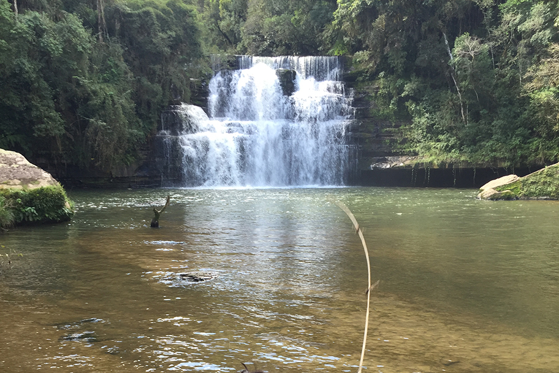

Paisagens e pontos turisticos
Rio Azul é aquela cidade, que pode se dizer completa de pontos turisticos, cheia de natuereza e paisagens de tirar o folego de qualquer um,
sentir a paz mental, o sossego e a tranquilidade de uma cidadezinha do interior, ar puro, belezas naturais abundantes, cachoeiras, gastronomia... situada no Centro Sul do Estado do Paraná, Rio Azul tem muito a oferecer.
Podemos proporcionar a você diversos tipos de Turismo como: ecológico, ambiental, artístico, cultural, religioso, turismo do "sossego", turismo da tranquilidade, turismo de saúde física e mental, solidário, turismo de negócios e consumo, de aventura, esportivo, rural...
No Turismo Ecológico, Ambiental e Aventureiro, o Município de Rio Azul disponibiliza de diversas cachoeiras, fauna e flora nativa.
No Turismo Artístico e Cultural, o Município possui diversos locais que foram pintados por pintores locais, artistas, escolas de dança.
No Turismo Religioso, podemos desfrutar de lindas capelas e igrejas, festas religiosas promovidas pelas capelas, confecção de tapetes no Corpus Christi.
No Turismo do sossego, da tranquilidade da saúde mental, podemos citar a tranquilidade de uma cidade pacata do interior, o ar puro, a natureza, o canto dos pássaros, o barulho das quedas d'água, também podemos contar com o turismo da saúde física onde o hospital do Município é bastante procurado pela população local e regional.
No Turismo Solidário, o turista poderá conhecer os trabalhos realizados, bem como ajudar e interagir junto ao Lar dos Velhinhos, APAE, Grupo da Melhor Idade, dentre outros.
Turismo de consumo e negócios, podemos citar o consumo nos diversos restaurantes, feira do produtor rural, serviços hoteleiros, etc.
Turismo Esportivo, o Município possui amplos espaços para a prática esportiva, seja ela em espaço aberto ou coberto, sendo disponibilizado à população diversos campeonatos e modalidades
Veja abaixo algumas imagens das inumeras que poderam ser fotografadas quando você vim aqui!
Links úteis:
-Mapa geral do turismo na cidade com pontos de localização:
- Mapa turismo ecológico:
- Mapa turismo gastrônomico:
Sitio Angélica
Serviços de Hoteis:
MAPA 04Links direcionaveis:
- Cachoeira Dussanoski;
- Cachoeira da pedreira;
- Capela Senhor Bom Jesus de Cachoeira dos Paulistas;;
- Pico Marumbi;
- Interior;
Cachoeira Dussanoski
Localizada na comunidade de Marumbi dos Ribeiros, a 16 quilômetros da sede do município. A cachoeira está em uma propriedade particular com visitação livre para o turista. Tem espaço para estacionamento e acampamento.
Cachoeira Da Pedreira
A demonstração de força da natureza torna o lugar ainda mais exuberante. A cachoeira, de 15 metros de altura, está no Parque Municipal Salto da Pedreira, em Rio Azul. O parque é formado por bosque, trilha ecológica, piscina de água natural (antiga pedreira), quadras esportivas, quiosques e churrasqueiras. Oferece também centro de eventos, lanchonetes e mirante.
Capela Senhor Bom Jesus de Cachoeira dos Paulistas
As pinturas internas de Antonio Petrek mantêm o brilho do local. A Igreja da Cachoeira é uma capela de madeira, que possui cópias de pinturas famosas da Itália da época renascentista, por exemplo, da Sagrada Família, anjos e São José Marceneiro. As reproduções nas paredes e no teto são grandes, expondo desenhos de passagens e personagens bíblicas.

Visão do Pico Marumbi
Jovens e aventureiros que preferem acampar, fazer trilhas ou voar de asa delta, podem conhecer o Pico do Marumbi em Faxinal dos Limas. Será uma grande experiência.

O interior
Aqui uma captura de uma paisagem da zona rural rioazulense
Referências:
Viaje ParanaPrefeitura